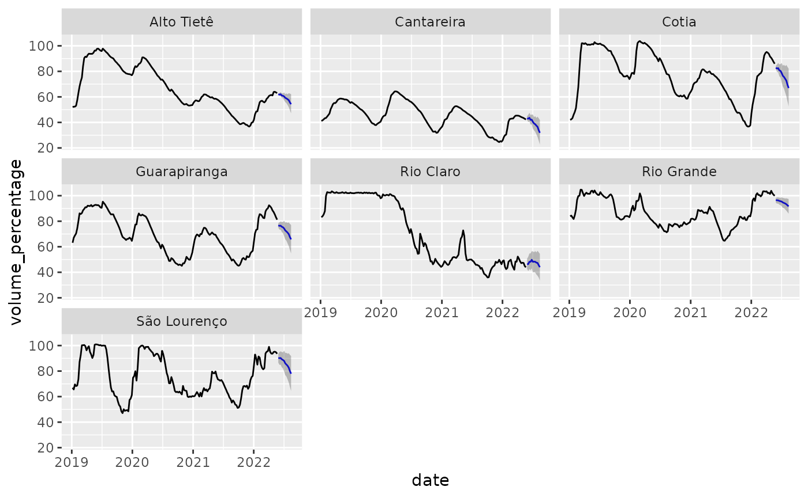

Getting started
Getting-started.Rmd
suppressPackageStartupMessages(library(tidymodels))
library(tft)
set.seed(1)
torch::torch_manual_seed(1)tft is an R implementation of Temporal Fusion Transformers (TFT) using the torch package. The Temporal Fusion Transformer is a neural network architecture proposed by Bryan Lim et al. with the goal of making multi-horizon time series forecasts for multiple time series in a single model.
The main difference between TFT and conventional forecasting methodologies is the way its architecture allows encoding different types of input data that can exist in forecasting problems. For instance, the model allows handling static covariates and time varying (known and unknown) differently.
TFT announcement shows promising benchmarks in forecasting performance for a variety of datasets.
The R package tft abstracts away the details of the architecture and provides an API that allows easy experimenting with the TFT architecture.
In this article we will create forecasts for the ‘mananciais’ dataset. This dataset includes daily level information for a set of 7 water reservoirs that supply the São Paulo metropolitan region in Brazil.
mananciais <- readr::read_csv2("https://github.com/beatrizmilz/mananciais/raw/a2d1d8b04cbd3a3a71836a4849d90a5e024e5180/inst/extdata/mananciais.csv")
#> ℹ Using "','" as decimal and "'.'" as grouping mark. Use `read_delim()` for more control.
#> Rows: 50654 Columns: 8
#> ── Column specification ────────────────────────────────────────────────────────
#> Delimiter: ";"
#> chr (1): sistema
#> dbl (6): volume_porcentagem, volume_variacao, volume_operacional, pluviomet...
#> date (1): data
#>
#> ℹ Use `spec()` to retrieve the full column specification for this data.
#> ℹ Specify the column types or set `show_col_types = FALSE` to quiet this message.
# translate column names
reservoirs <- mananciais %>%
select(
date = data,
system = sistema,
volume_percentage = volume_porcentagem, # volume in % of total capacity
volume_variation = volume_variacao, # % variation from the day before
volume_operational = volume_operacional, # operational volume in hm3
pluviometric_daily = pluviometria_dia, # pluviometrics daily in mm
pluviometric_month = pluviometria_mensal, # accumulated pluviometrics monthly
pluviometric_hist = pluviometria_hist # mean historical pluviometrics
)
dplyr::glimpse(reservoirs)
#> Rows: 50,654
#> Columns: 8
#> $ date <date> 2022-05-24, 2022-05-24, 2022-05-24, 2022-05-24, 20…
#> $ system <chr> "Cantareira", "Alto Tietê", "Guarapiranga", "Cotia"…
#> $ volume_percentage <dbl> 42.2, 62.8, 80.9, 85.7, 99.7, 43.8, 93.3, 42.3, 63.…
#> $ volume_variation <dbl> -0.1, -0.2, -0.3, -0.2, -0.2, -0.1, -0.3, -0.1, -0.…
#> $ volume_operational <dbl> 414.31772, 351.98456, 138.51027, 14.13465, 111.8011…
#> $ pluviometric_daily <dbl> 0.0, 0.1, 0.2, 0.2, 0.2, 1.0, 0.0, 0.1, 0.2, 0.0, 0…
#> $ pluviometric_month <dbl> 31.6, 31.3, 9.0, 6.0, 12.4, 55.0, 34.8, 31.6, 31.2,…
#> $ pluviometric_hist <dbl> 74.8, 69.4, 59.6, 64.6, 79.9, 132.6, 88.9, 74.8, 69…Preparing the data
We first display the data for the 7 reservoirs:
reservoirs %>%
ggplot(aes(x = date, y = volume_percentage, color = system)) +
geom_line()To reduce computation time and make the model more useful, we are going to aggregate the data into weekly intervals. This will leave us with a much smaller dataset, which should make the model much faster to train. It also allows us to choose a larger horizon.
reservoirs <- reservoirs %>%
mutate(date = lubridate::floor_date(date, unit = "week")) %>%
group_by(date, system) %>%
summarise(across(everything(), .fns = ~mean(.x, na.rm = TRUE)), .groups = "drop")We used the mean o aggregate all variables even though the volume_variation is now much harder to interpret. The new dataset looks like:
reservoirs %>%
ggplot(aes(x = date, y = volume_percentage, color = system)) +
geom_line()
The level can go below the 0%, this means that water from a so called ‘technical water reserve’, ie water from below the level of the usual water pipes has been used. This happened during the severe drought the hit the region between 2014 and 2017.
Our goal is to predict the reservoir level for the 3 months (12 weeks to be more precise). We will split the dataset in 3 parts. The last 3 months for testing, the previous 3 for validation and the rest for training the model.
last_date <- max(reservoirs$date)
train <- reservoirs %>% filter(date <= (last_date - lubridate::weeks(48)))
valid <- reservoirs %>% filter(date > (last_date - lubridate::weeks(48)),
date <= (last_date - lubridate::weeks(12)))
test <- reservoirs %>% filter(date > (last_date - lubridate::weeks(12)))Now that the data is prepared we will create a preprocessing pipeline using the recipes package. This recipe will allow handling normalization of covariates - which is very important in neural network models. It also adds a few covariates that are recommended by the paper authors like time_since_beginingand categoricals for month and week in the year.
rec <- recipe(volume_percentage ~ ., data = train) %>%
step_mutate(
time_since_begining = as.numeric(difftime(
time1 = date,
time2 = lubridate::ymd(min(reservoirs$date)),
units = "weeks"
)),
date_week = as.factor(lubridate::week(date)),
date_month = as.factor(lubridate::month(date)),
date_wday = as.factor(lubridate::wday(date))
) %>%
step_impute_mean(pluviometric_hist) %>%
step_normalize(all_numeric_predictors())Specifying the covariates
Like we said earlier, TFT allows encoding covariates differently in the architecture. There are 5 possible ways tft can treat columns in the dataset that we summarise below:
- ‘index’: is a single date column that specifies at which point in time the observation refers to. This is not directly used by the model itself, but is used internally to create rolling windows and order observations.
- ‘key’: are groups of columns that identify a single time series. Keys are necessary if you are creating predictions for multiple time series in a single model. By default, ‘keys’ are also considered ‘static’ predictors by the model.
- ‘static’: predictors are considered ‘static’ when they don’t vary over time, they are information from the time-series, like a region or a kind of product.
- ‘unknown’ are predictors that vary over time but we only know values observed for past observations. For example, you can use the daily temperature as a predictor, but you only know it for past observations.
- ‘known’ are predictors that vary over time and are known even for future observations. For example, the day of the week can be used as a predictor for a daily time series, and it’s known for every time step, no matter if it’s from past or future.
To specify the role of each covariate in the model we use the tft_dataset_spec() function. This interface has a similar intent as recipes (in tidymodels), ie. it allows you to reproduce the same preprocessing to a different dataset later - which is useful when you want to create forecasts.
Also part of the dataset specification is the history size the model will use to make predictions and the size of the horizon (ie how many time-steps ahead) we want to generate predictions. Consider the following diagram to represent the time series

Time series
tft feeds data to the model in slices that have a fixed history size, that we call lookback and a fixed number of timesteps ahead that we are calling horizon. Those are represented in the diagram below:
Slices
Now lets create the tft dataset specification. We don’t need to manually specfy the unknown covariates as, unmentioned variables are automatically treated as such.
spec <- tft_dataset_spec(rec, train) %>%
spec_covariate_index(date) %>%
spec_covariate_key(system) %>%
spec_covariate_known(time_since_begining, starts_with("date_"))The print method for spec shows useful information about the specification:
spec
#> A <tft_dataset_spec> with:
#>
#> ✖ `lookback` and `horizon` are not set. Use `spec_time_splits()`
#>
#> ── Covariates:
#> ✔ `index`: date
#> ✔ `keys`: <list: system>
#> ! `static` is not set. Use `spec_covariate_static()` to set it.
#> ✔ `known`: <list: time_since_begining, starts_with("date_")>
#> ! `unknown` is not set. Covariates that are not listed as other types are considered `unknown`.
#>
#> ℹ Call `prep()` to prepare the specification.Here we see that we didn’t specify the lookback and horizon, so let’s add it to the spec. The lookback usually works like any other hyperparameter and we in general choose values between 10 and 1000 depending on the time series period. Horizon is chosen to statisfy business needs, ie. if you want to have predictions for 30 days ahead, you should choose that.
spec <- spec %>%
spec_time_splits(lookback = 5*12, horizon = 12)We now execute prep to prepare the spec:
spec <- prep(spec)
spec
#> A <prepared_tft_dataset_spec> with:
#>
#> ✔ lookback = 60 and horizon = 12.
#> ✔ The number of possible slices is 6,413
#>
#> ── Covariates:
#> ✔ `index`: date
#> ✔ `keys`: system
#> ✔ `static`:
#> ✔ `known`: time_since_begining, date_week, date_month, and date_wday
#> ✔ `unknown`: volume_variation, volume_operational, pluviometric_daily, pluviometric_month, and pluviometric_hist
#> ℹ Variables that are not specified in other types are considered `unknown`.
#>
#> ℹ Call `transform()` to apply this spec to a different dataset.The print method now shows the name of all variables that will be used in the model and their role. Also shows information about the number of slices that will be used.
Fitting the model
We will now fit our model. To that we first initialize the a model with:
model <- temporal_fusion_transformer(
spec,
hidden_state_size = 8,
learn_rate = 1e-3,
dropout = 0.5,
num_attention_heads = 1,
num_lstm_layers = 1
)
model
#> <luz_module_generator>model is a luz module, thus you can use luz workflows to train the model. For an example, you can use the lr_finder function to find the best learning rate for your model.
result <- luz::lr_finder(
model,
transform(spec, train),
end_lr = 1,
dataloader_options = list(
batch_size = 64
),
verbose = FALSE
)
plot(result) + ggplot2::coord_cartesian(ylim = c(0.15, 0.5))
This allows us to choose a learning rate. We will start with 1e-3. Let’s redefine the model now fixing the learning rate:
model <- temporal_fusion_transformer(
spec,
hidden_state_size = 8,
learn_rate = 1e-3,
dropout = 0.5,
num_attention_heads = 1,
num_lstm_layers = 1
)We can then fit the model using fit. Since model is a luz module we are mainly calling ?fit.luz_module_generator here, so all arguments apply.
fitted <- model %>%
fit(
transform(spec),
valid_data = transform(spec, new_data = valid),
epochs = 100,
callbacks = list(
luz::luz_callback_keep_best_model(monitor = "valid_loss"),
luz::luz_callback_early_stopping(
monitor = "valid_loss",
patience = 5,
min_delta = 0.001
)
),
verbose = FALSE,
dataloader_options = list(batch_size = 64, num_workers = 4)
)
plot(fitted)
We can evaluate the model in the test set using the luz::evaluate function:
fitted %>%
luz::evaluate(
transform(spec, new_data = test, past_data = bind_rows(train, valid))
)
#> A `luz_module_evaluation`
#> ── Results ─────────────────────────────────────────────────────────────────────
#> loss: 0.129
#> q10: 0.0689
#> q50: 0.2039
#> q90: 0.1142Once we are happy with the results of our model we can make forecasts using the forecast function. The model we have trained can make predictions for at most 12 weeks ahead.
By default forecast generates predictions for the period right after the data the model has been trained. You can pass the past_data argument to make predictions for a more recent period.
forecasts <- generics::forecast(fitted, past_data = reservoirs)
glimpse(forecasts)
#> Rows: 84
#> Columns: 5
#> $ date <date> 2022-05-29, 2022-06-05, 2022-06-12, 2022-06-19, 2022-06-2…
#> $ system <chr> "Alto Tietê", "Alto Tietê", "Alto Tietê", "Alto Tietê", "A…
#> $ .pred_lower <dbl> 61.81052, 60.57896, 60.71599, 59.16911, 58.93370, 57.35214…
#> $ .pred <dbl> 61.98054, 61.79831, 62.08167, 60.99346, 60.87527, 60.34175…
#> $ .pred_upper <dbl> 62.48463, 63.06790, 63.79862, 62.74385, 62.79102, 63.43890…The return value of forecast is a tibble containing predictions for each time serie in the 12 weeks ahead.
We can then show the predictions in a plot:
reservoirs %>%
filter(date > lubridate::ymd("2019-01-01")) %>%
full_join(forecasts) %>%
ggplot(aes(x = date, y = volume_percentage)) +
geom_line() +
geom_line(aes(y = .pred), color = "blue") +
geom_ribbon(aes(ymin = .pred_lower, ymax = .pred_upper), alpha = 0.3) +
facet_wrap(~system)